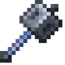

🔧 Crafting the Mace
The Mace is crafted using a Heavy Core (dropped by the Vault) and a Breeze Rod. It's a powerful close-range weapon that deals bonus damage based on how far you fall before hitting an enemy. Even a 3-block fall gives you a significant damage boost.

🛠️ Repairing the Mace
You can repair the Mace in two ways: by using the Mending enchantment (which uses XP orbs collected during play), or by combining it with a Breeze Rod on an anvil. Mending is the preferred option for long-term use since it keeps all your enchantments intact.

⚡ The Tick-Swap Technique
Advanced players can deal massive burst damage by hitting an enemy with another weapon first, then immediately swapping to the Mace within the same game tick. This stacks the initial hit's effects with the Mace's fall damage bonus, making it one of the highest single-hit damage combos in the game.

🌬️ Wind Charge Combo
Combine the Mace with a Wind Charge to launch yourself into the air and then smash enemies from above. The higher you launch yourself, the more fall damage bonus the Mace accumulates. This combo can one-shot most mobs and even deal serious damage to players wearing full Netherite armor.
Density — increases fall damage bonus per level (up to level V).
Breach — reduces the target's armor effectiveness by 15 % per level.
Wind Burst — launches you upward on kill, ready for the next smash.
Mending — keeps your Mace repaired during normal gameplay.